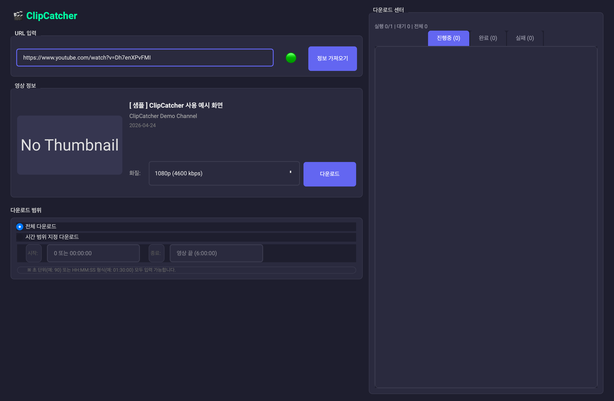
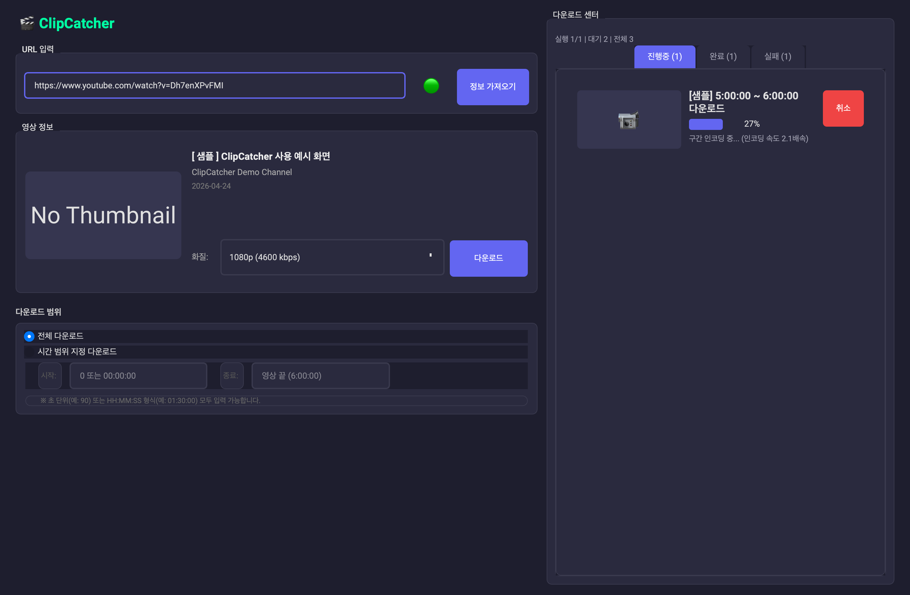
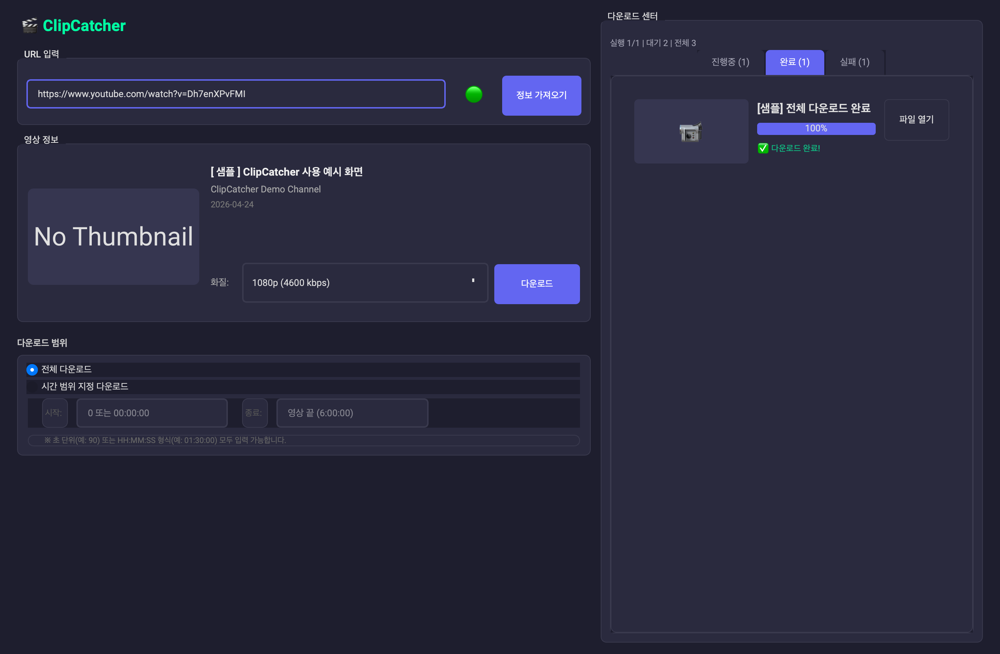

전체 VOD 저장
보관이 필요한 방송은 URL을 넣고 화질을 선택한 뒤 전체 다운로드로 저장합니다.
Main Project
ClipCatcher는 치지직 VOD와 클립, YouTube 영상을 GUI에서 내려받을 수 있게 만든 데스크톱 앱입니다. 전체 영상 저장부터 시간 범위 다운로드, 순차 다운로드 관리까지 편집 작업에 필요한 기본 흐름을 한 곳에 모았습니다.

Why It Helps
보관이 필요한 방송은 URL을 넣고 화질을 선택한 뒤 전체 다운로드로 저장합니다.
8시간 방송 중 5:00:00부터 6:00:00까지만 받는 식으로 필요한 구간만 저장할 수 있습니다.
진행중, 완료, 실패 탭으로 작업 상태를 나눠 보고 순차 다운로드 흐름을 관리합니다.
Screens

